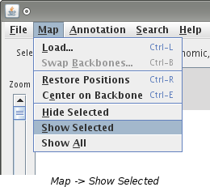

Showing Hidden Data
This page is for showing hidden data. If you would like to hide data, visit the
hiding data page.
Showing a Map
There are 3 ways to show hidden maps:
Double Clicking
When a map is hidden, it will be replaced by a vertical, gray bar. Double click
anywhere on this bar and the map will be shown where the gray bar was.
Showing a Single Hidden Map
This method is used when you want to show only one hidden map.
- Select the hidden map you want to show. This is done by single clicking
on the gray bar. You will know you have selected the map by looking at the
selection bar. It will display information about the map when it has been
selected.
- Now that you have selected a map, choose "Map -> Show Selected"
from the menu.

- The map will be shown where the gray bar was.
Showing all Hidden Maps
When you have multiple hidden maps and you would like to show them all, use this method.
- Choose "Map -> Show All" from the menu.
- Every map that was hidden will now be shown.
Notes:
- Showing a hidden map will show all of the annotation that was loaded for it including
annotation that was hidden when the map was hidden.
Showing Annotation
The are 3 ways to show annotation:
Show All Hidden Annotation
Select "Annotation -> Show -> All" from the menu. This will show every
annotation that has been hidden regardless of what type it is and what map it is on.
Show All in Selected Interval
- Select an interval on the map. This is done by clicking and draging on a segment. The
interval selected will become shaded in green. If there are multiple maps visible, the
corresponding interval(s) on them will also be selected.
- Next you need to choose "Annotation -> Show -> All in Selected Intervals"
from the menu.
- Any annotation that crosses into the selected interval(s) and is currently hidden will be shown.
Show All of the same Type
Choose "Annotation -> Show -> All of Type... -> -----" from the menu. Under
"All of Type..." will be a listing of annotation types that have been loaded.
Select on from the list to have that type shown on all maps.
See Also